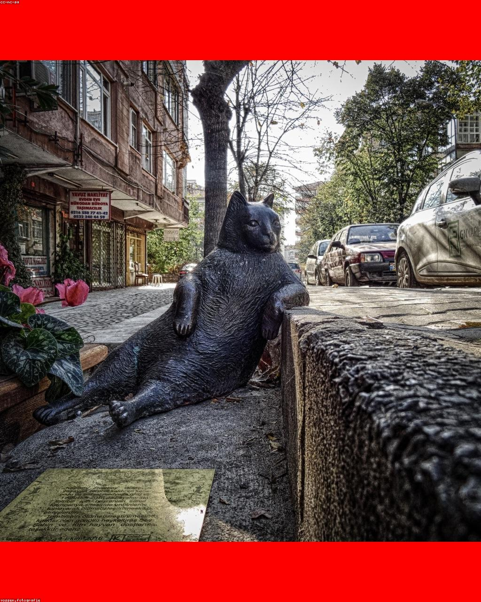
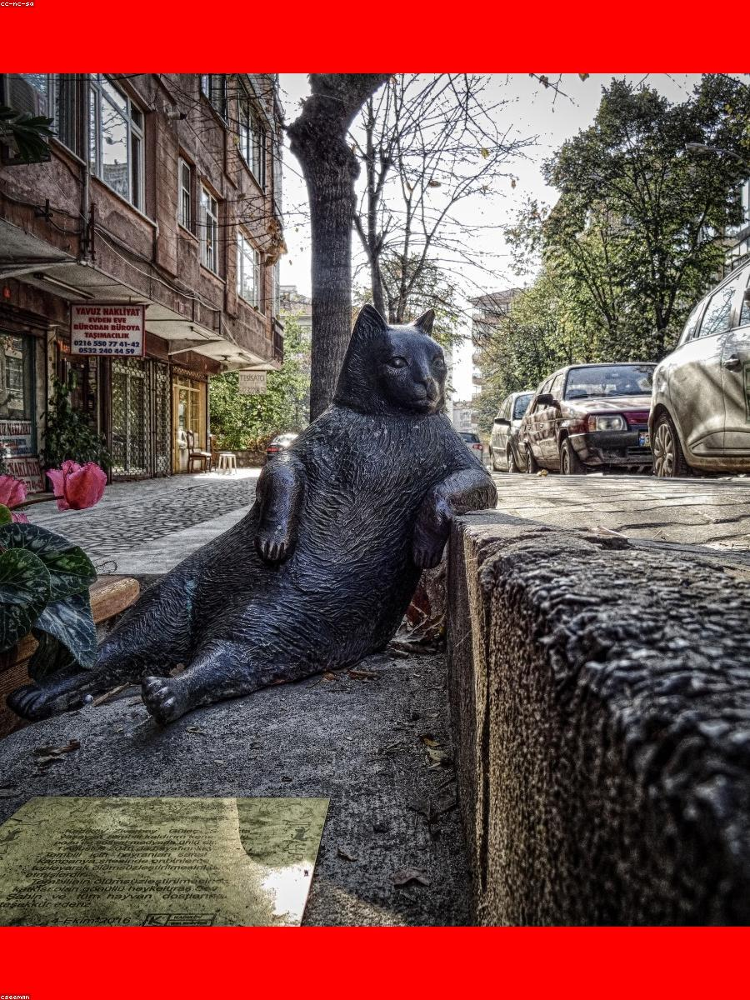
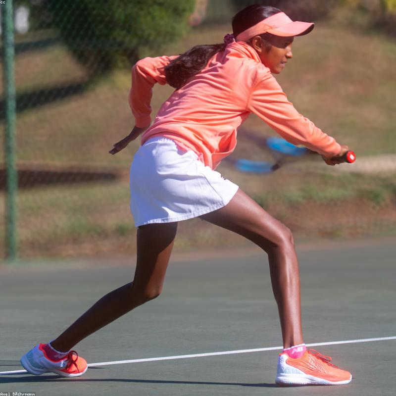
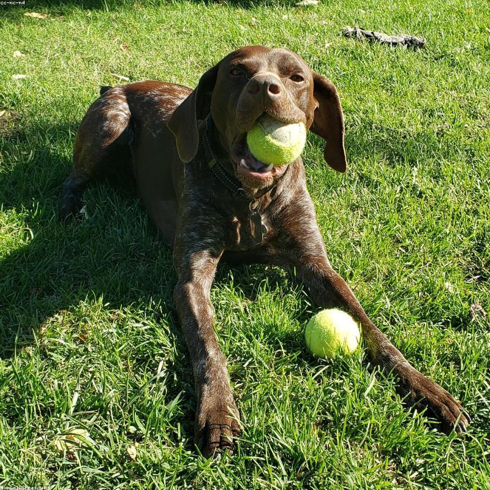
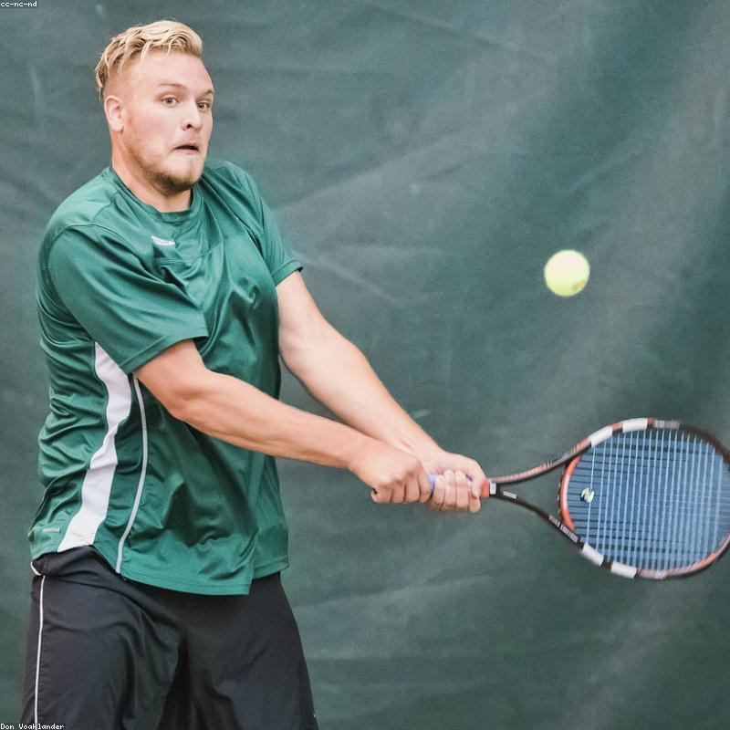
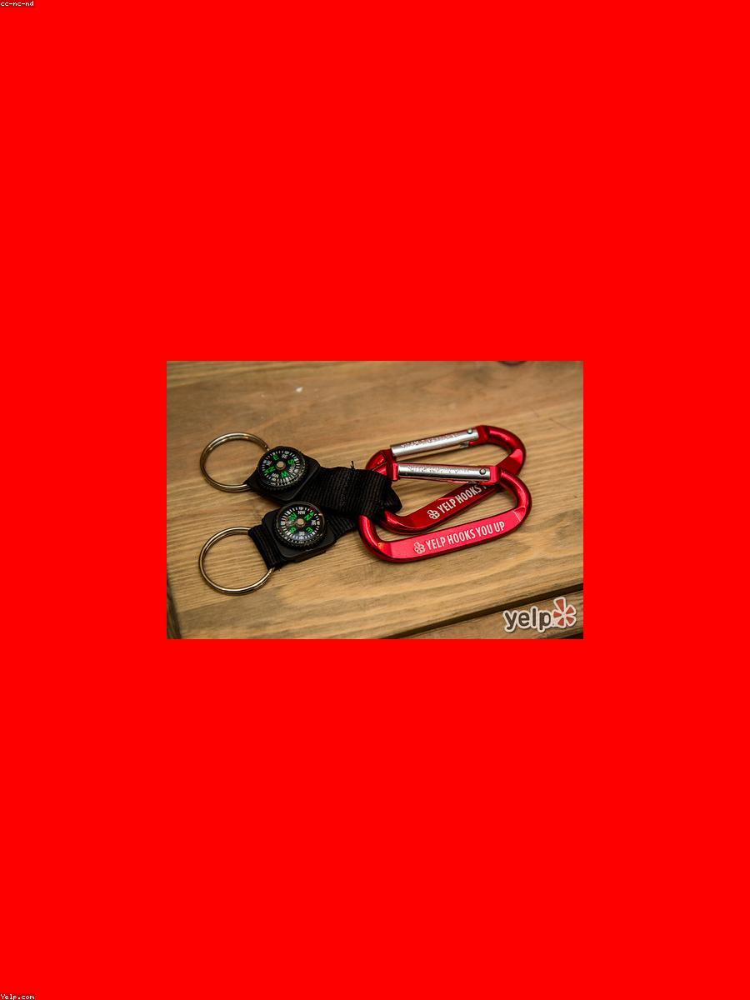
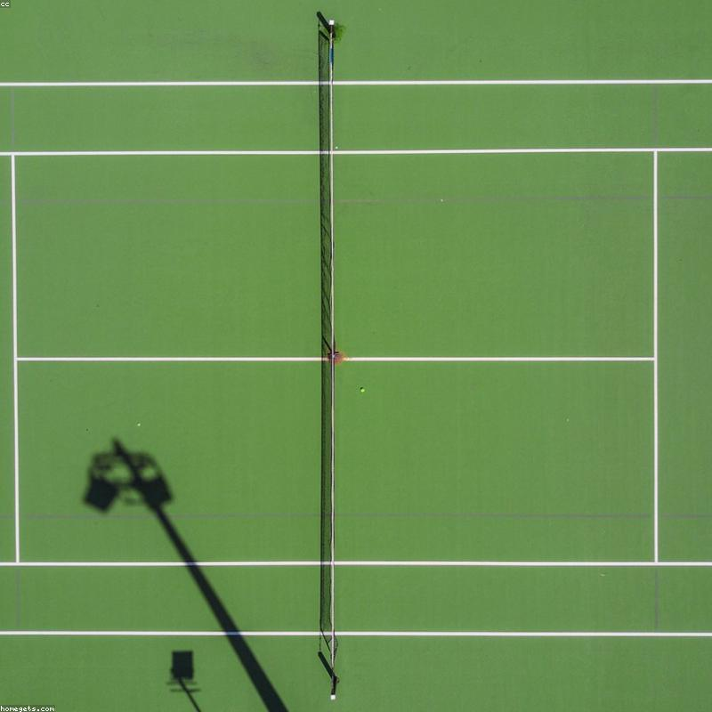

01
Teniški vrtec
Predšolski otroci skozi igro spoznavajo lopar, žogo in gibanje.
Od prvega loparja v teniškem vrtcu do vrhunske tekmovalne poti — tri desetletja gradimo igralce z znanjem, karakterjem in ljubeznijo do igre.
Teniško akademijo Breskvar sta leta 1992 ustanovila Boris in Peter Breskvar.
Iz družinske strasti do igre je zrasel eden najprepoznavnejših teniških centrov v Sloveniji. Verjamemo, da se prvaki gradijo postopoma — s pravo tehniko, telesno pripravo in mentaliteto — zato vsak igralec dobi program po meri in trenerja, ki mu stoji ob strani.

Soustanovitelj Boris Breskvar (1942–2012) je bil eden najuglednejših teniških trenerjev svoje generacije — pod njegovim vodstvom so odraščala imena kot Boris Becker, Steffi Graf in Andrij Medvedjev, vodil pa je tudi slovensko Davisov pokal reprezentanco.
„Tenis ni le tehnika — je značaj, ki ga zgradiš z vsakim treningom.“
To zapuščino danes v Ljubljani nadaljuje Peter Breskvar. Na igriščih akademije so brusili igro tudi slovenski profesionalci — Blaž Rola, Kaja Juvan, Tamara Zidanšek in Bor Artnak — med mladimi upi pa izstopa Svit Suljić.
Od igrivih prvih korakov do resne tekmovalne priprave — izberi svojo barvo igre.
Predšolski otroci skozi igro spoznavajo lopar, žogo in gibanje.
Manjše, po znanju izenačene skupine — tehnika, taktika in tedenska kondicija.
Trening na pesku in trdi podlagi, kondicija ter priprave v Portorožu.
Julija in avgusta v Ljubljani, družinski teden pa v Bovcu.
Trening ena-na-ena skozi vse leto, prilagojen tvojim ciljem.
Šest badmintonskih igrišč v dvorani in poletna igrišča za odbojko na mivki.
Vodja akademije ter njene teniške šole in tekmovalnega programa, diplomant Fakultete za šport in član izvršnega odbora Teniške zveze Slovenije.
„Najlepše je, ko otrok, ki je komaj držal lopar, nekega dne zaigra brez strahu.“
Peter nadaljuje družinsko teniško tradicijo, ki jo je začrtal oče Boris — klasično šolo udarca združuje s sodobno telesno pripravo. Njegovo vodilo: vsak igralec si zasluži trenerja, ki verjame vanj.
Povleci vstran →






Pridi na igrišče Tesovnikova 74c ali nam piši — z veseljem ti svetujemo pravi program.